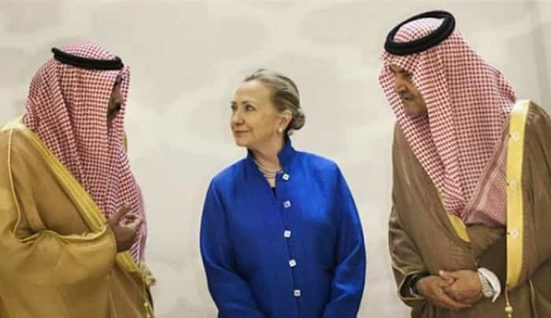
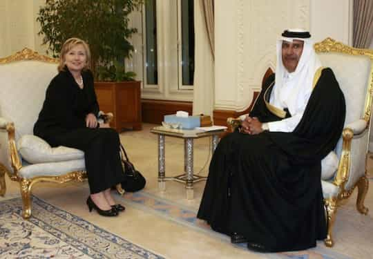
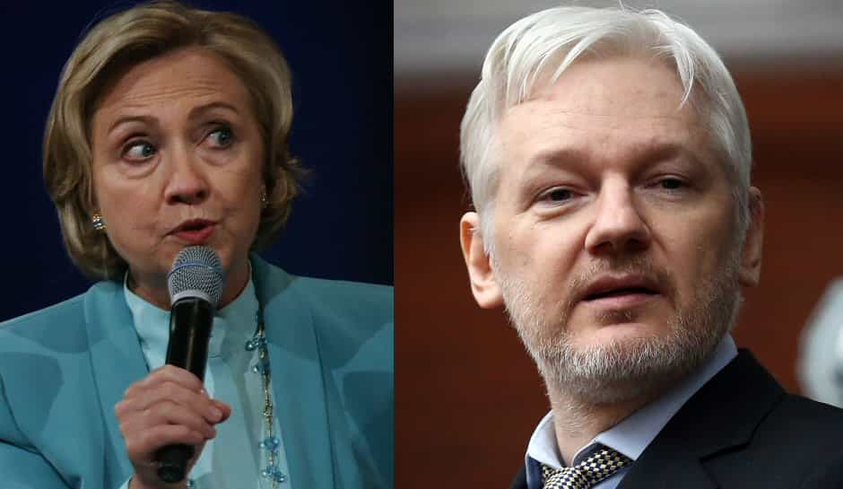

< < < Back
7 Wikileaks Revelations About Hillary Clinton That The Media Is Completely Ignoring – Return Of Kings
The recent Wikileaks revelations about the Clintons, the Clinton campaign, media collusion, and the various hypocrisies of the Democratic Party are groundbreaking in both their scope and depth. The sheer number of hacked emails covering so many topics, combined with the shadiness of the activities involved, should have already handed Donald Trump the election.
Alas, the media, whose collusion with the Clinton campaign is laid out in many of the emails, will not have a bar of reporting them in a professional, ethical fashion. The following seven email exchanges have either been deliberately suppressed by mainstream outlets or given the slimmest coverage to feebly ward off accusations that they are in the de facto service (or pocket) of Hillary Clinton.
1. “Women’s advocate” Hillary Clinton admits that Saudi Arabia and Qatar fund ISIS, but refuses to rebuke them for it

Hillary Clinton and them Saudis.
After rounding on Donald Trump for very tamely calling former Miss Universe Alicia Machado “Miss Piggy,” one might think that Hillary Clinton has the interests of women at heart. Her admission that Saudi Arabia and Qatar fund female-enslaving ISIS tells another story. It is impossible to see that Trump has anything to answer for regarding women as is, not to mention when his record is contrasted with Hillary’s enabling of Saudi and Qatari behavior.
Saudi Arabia and Qatar practice their own intense forms of oppression against women and the Clinton email means that she is only too aware that they are exporting this oppression by financially backing ISIS. As will be explored below, the Clintons are arguably beholden to the Saudis and Qataris, who have given very large donations to the Clinton Foundation.
Meanwhile, what of the massive arms sales and other military support given to the Saudis and Gulf States? Why help arm those states which are funding ISIS?
2. John Podesta owned 75,000 shares in a Putin-linked company, despite he and Clinton criticizing the Trump campaign for its Russian connections
One mantra used by the Clinton campaign ad infinitum so far is that Donald Trump’s campaign is merely a slave movement for advancing the interests of Russian President Vladimir Putin. Democrats and journalists alike (wait, aren’t they the same thing?) have claimed that the Russian business ties of Trump and his associates are a national security risk should the Republican nominee be elected. So why was nothing said publicly of John Podesta’s ownership of 75,000 shares in Joule Unlimited? Joule had received millions in funds from a government-backed Russian fund and Podesta was on its executive board.
After all, remember Paul Manafort Jr., the national chairman of the Trump campaign? He moved on/was moved on after the liberal media continually attacked him for his alleged sympathies towards Russia. Especially due his former role as a lobbyist for the now ousted pro-Russian Ukrainian President, Viktor Yanukovych, commentators screamed that Manafort’s history was a liability. Moreover, Trump’s entire presidential campaign was likewise characterized as benefiting Putin more than America. The New York Times, Time and other outlets published a flurry of hit pieces centered on Manafort and his then boss, during the exact same period that the Clinton campaign was ramping up its “Russian collusion” angle against Trump.
And Podesta? Well, he gets a free ride.
3. “Anti-SJW” ex-politician and Heat Street head Louise Mensch wrote ad material for Hillary Clinton—so which other “conservatives” are doing similar things?
Louise Mensch is a former Conservative British MP exposed by Wikileaks for her outright collusion with the Clinton campaign. Though she had outed herself as a “never Trump” hacktivist long before this, her help in writing ad material for Hillary Clinton was surreptitious until more of the Podesta emails went public. Online publication Heat Street, which Mensch heads, has tried to make a name for itself in supposedly outing SJW lunacy and other leftist stupidities.
The question remains, is Mensch a cucked conservative or an outright political double agent? Perhaps, more opportunistically, she is a mere financial opportunist whose political allegiances are amenable to dollar signs. Heat Street pays her bills for now, but should Clinton win in November, could she be wanting a new, safer career? The leftist media milieu is pretty crowded at the moment; the ad material could be Mensch’s entry card to the media big time.
Whatever the case, Louise Mensch’s perverse game of anti-Trump conservatism by day and Hillary stooge by night is one others are undoubtedly resorting to as well. Many traitors to the conservative cause will not have been as reckless as Mensch, who left an easy paper trail in helping the Clinton campaign. Had their budding relationship turned sour, it could have been the DNC or Clinton’s campaign who outed her, not Wikileaks. So how many of the chat-on-the-couch types of conservatives, Glenn Beck among them, are establishing quiet relationships with the Clinton campaign to stop Trump?
Fundamentally, who can we really trust amongst the anti-leftist insurgency?
4. Clinton allies want to create a voting public that does not think or assess politics critically
And as I’ve mentioned, we’ve all been quite content to demean government, drop civics and in general conspire to produce an unaware and compliant citizenry.
— Bill Ivey, Clinton insider and former Chairman of the National Endowment for the Arts under President Bill Clinton
A long-time friend of the Clintons, Bill Ivey, wrote an email to Podesta bemoaning how the American public was still “unaware” but lacked “compliance.” Ivey was very frank in admitting that he and others wanted to “conspire to produce an unaware and compliant citizenry.” The necessary method was to “conflate entertainment with the electoral process.”
The worried tone of the Ivey email published by Wikileaks indicates that Trump’s charismatic style, usually attacked by the Clinton campaign, is one that Democrats well and truly desire for their rather dull candidate. This jealousy aside, we ourselves should be concerned. Clinton supporters have the overwhelmingly clout in both Hollywood and major newsrooms across the United States, plus the newspapers and other media mediums. A series of celebrity and media figures could easily weaponize themselves further in producing a more politically biased entertainment and news industry.
Recent political-entertainment farces, such as Katy Perry’s naked call for Americans to vote, have been performed with the cover of being “comedy” (in case they failed to produce a result), but the underlying intent was to both reach and expand a dumbed-down audience. Skits like the Perry one should actually be read as: “I’m trying to be funny and get you to vote for anyone, but I really mean Hillary Clinton!” Unlike Trump, who actively questions the wisdom of an oligopoly controlling the media, high finance, and other vested interests, celebrities roped in to assist Clinton or any future leftist candidate will merely use their breasts, profanity, or other irrelevant talking points to create propaganda.
5. Tim Kaine was selected as Hillary’s running mate—in July 2015
Lobbyist Erick Mullen wrote an email to Podesta in July 2015 apparently complaining that Bob Glennon, an attorney for billionaire Robert Bass’ Keystone, Inc., was telling two other Senators that Hillary Clinton had already picked Senator Tim Kaine as her running mate. More recent information about a Vice Presidential nominee “shortlist,” which included Bill Gates and Tim Cook, seems to have been a cover. Almost a year to the day after Mullen’s email, Kaine was officially announced as Hillary’s running mate.
The Mullen revelation demonstrates two appalling potential aspects of the Clinton campaign: 1) a very fake process of searching for people to fill positions already decided on takes place and 2) this process heavily depends on/is determined by the scrutiny of donating billionaires and their advisers. Robert Bass is well-known for his financial support of Democrats and it is immediately suspicious that one of his attorneys would have been cited as spreading Kaine’s name as a certainty so early on in the game. What’s going on there?
6. Hillary’s campaign was tipped off about the likelihood of the State Department releasing her Benghazi emails
Heather Samuelson, a lawyer and the former White House liaison for the State Department, leaked a tip to the Clinton campaign that 300 of Hillary’s Benghazi emails were about to be released. Just as the decision not to prosecute Hillary over her private email server has bamboozled many a FBI insider and agent, this new discovery of special assistance to the Clinton campaign will greatly anger those interested in impartial judicial or Congressional investigations.
The substantial cross-over between federal government officials and those working for Democratic political campaigns is alarming. Heather Samuelson is just one of many who have carved careers out of switching from bureaucrat to partisan operative. It is hard to see how such jumping around can lead to good outcomes, especially as Samuelson’s source appears to be from the State Department itself.
7. Repressive Arab states have paid the Clinton Foundation millions for Bill Clinton’s “time”

Hillary Clinton’s Saudi and Qatari ties are cause for serious concern.
When Hillary Clinton was serving as Secretary of State, Saudi and Qatari interests were funding the Clinton Foundation to the tune of millions. The fact that Bill Clinton was then the main focus of Arab leaders’ requests for time and phone calls is irrelevant, as Clinton Foundation donors were heavily represented in the individuals and groups Hillary had official meetings with during her time at State.
Two email conversations are particularly troubling. In the first, John Podesta and various Clinton workers, including from the Clinton Foundation, have an exchange about Bill’s phone call with a Saudi sheikh. One staffer says that unless a $6 million check has been written out by the sheikh, the idea is “crazy.” In the second, Qatar desires a “five minute” meeting with Bill to give him a $1 million check for his birthday the previous year.
What exactly are the Saudis and Qataris getting out of these meetings and phone calls? And why, given Hillary’s own acknowledgment that both states fund ISIS, has the money not been returned?
This stuff is much bigger than Watergate

Richard Nixon fell into political oblivion for his alleged involvement in the break-in at Washington D.C.’s Watergate hotel in the early 1970s. Compare this scandal to the Clinton revelations published by Wikileaks and it appears minuscule. Everything from Hillary Clinton acquiescing to the funding of ISIS by the Saudis and Qataris (and keeping money from them) to the preordained selection of Tim Kaine as VP nominee reeks of political and moral corruption.
With Wikileaks promising to release even more emails and other evidence soon, will the media finally stand up and report the truth?
Read More: Hillary Clinton Calls At Least 20% Of American Voters “Deplorables” For Supporting Trump